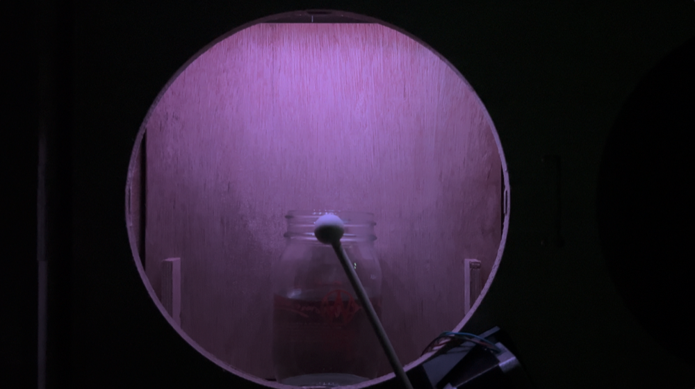
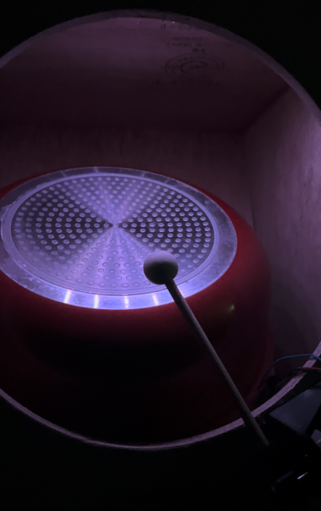

Robotic Drum Machine
Technology
- M5stickC
- Processing
- OSC Communication
- CNC
- Workshop
Robotic Drum Machine was created during a workshop jointly held by the School of Design and the School of Informatics at Meisei University.
Under the theme of deciding an algorithm together and performing according to its rules, the work controls mallets using an algorithm in which the corresponding mallet strikes when a simulated pendulum reaches its highest speed.
The piece presents two kinds of visual information: the simulated movement of pendulums in software and the physical movement of actuators.
The exterior was fabricated from CNC-cut boards. Everyday objects are placed on shelves, and the mallets strike them to perform rhythms. By controlling the mallets algorithmically, the machine creates music.

